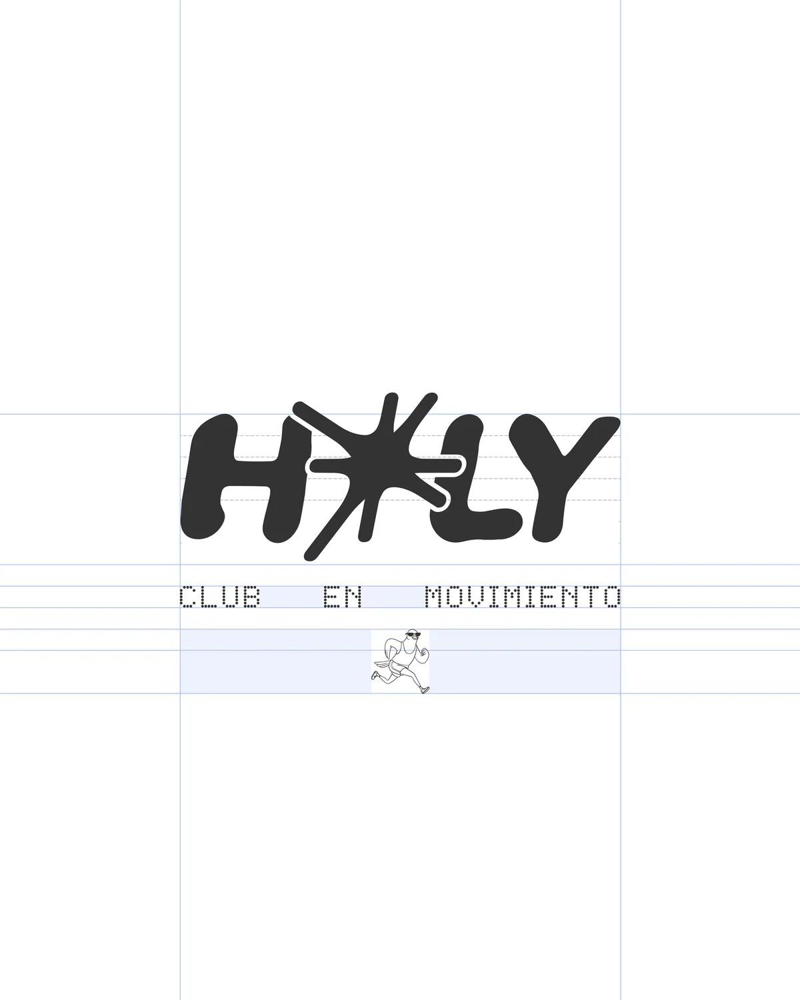
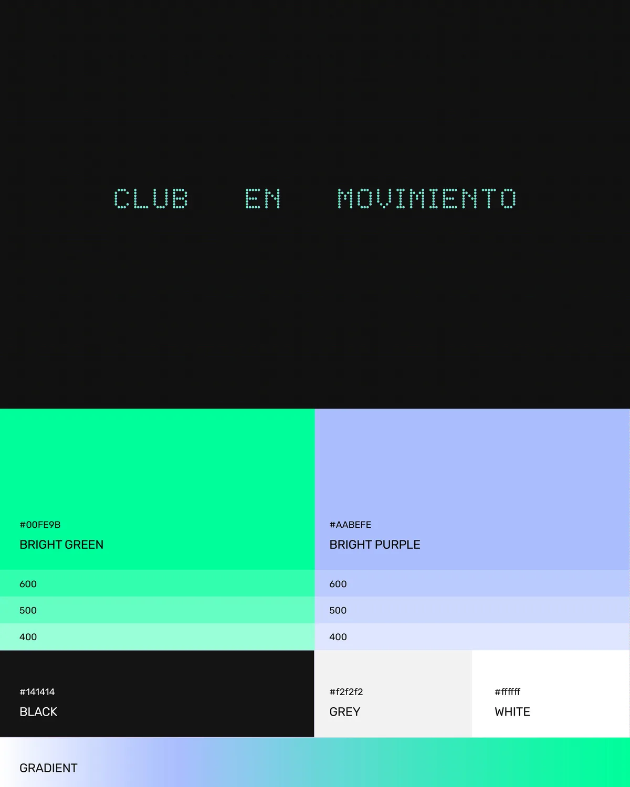
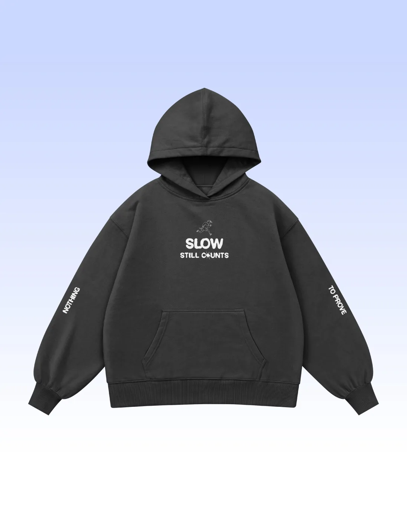
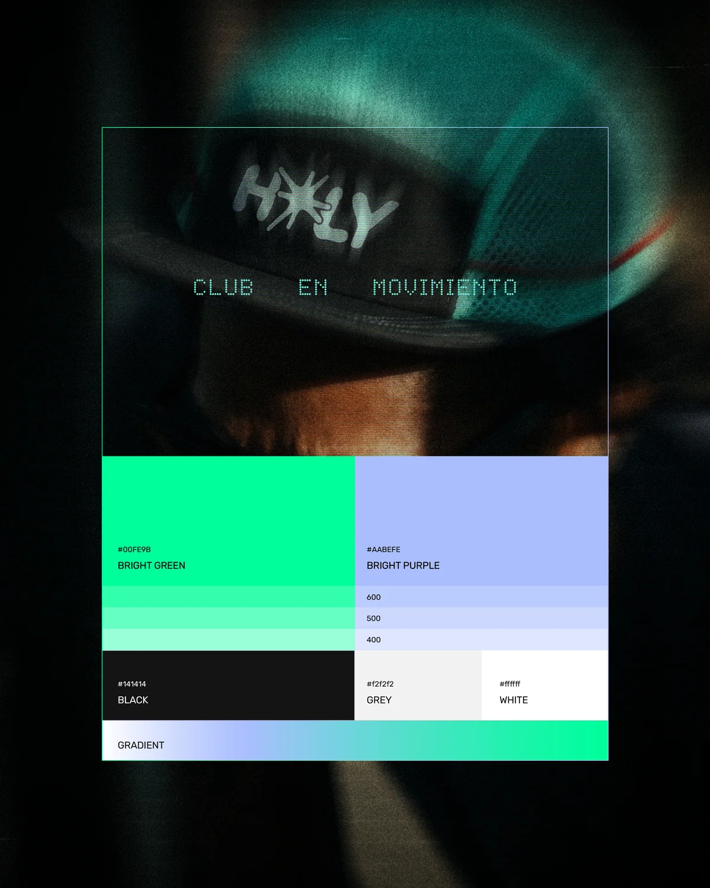
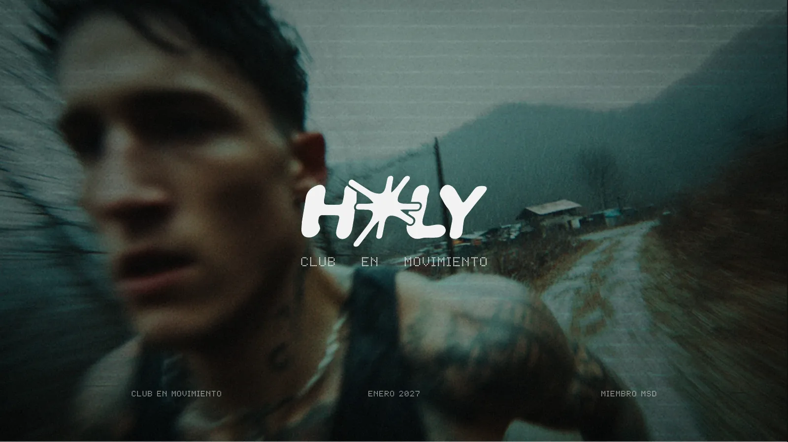

// Proyecto
Holy
Club en movimiento
Holy es el arte de estar en movimiento. Este Club de Movimiento nace con la intención de crear un espacio donde personas con la misma sensación podamos encontrarnos para correr, hacer hiking, andar en bici o simplemente caminar al aire libre, sin la necesidad de competir, medir tiempos o contar kilómetros.
Un espacio donde lo importante no sea demostrar algo, sino sentirnos bien mientras seguimos en movimiento.









Nothing to prove.
Because it’s not about being the best, but about feeling capable.
// Brand Guidelines
Manual de marca
30 páginas · 5 capítulos
